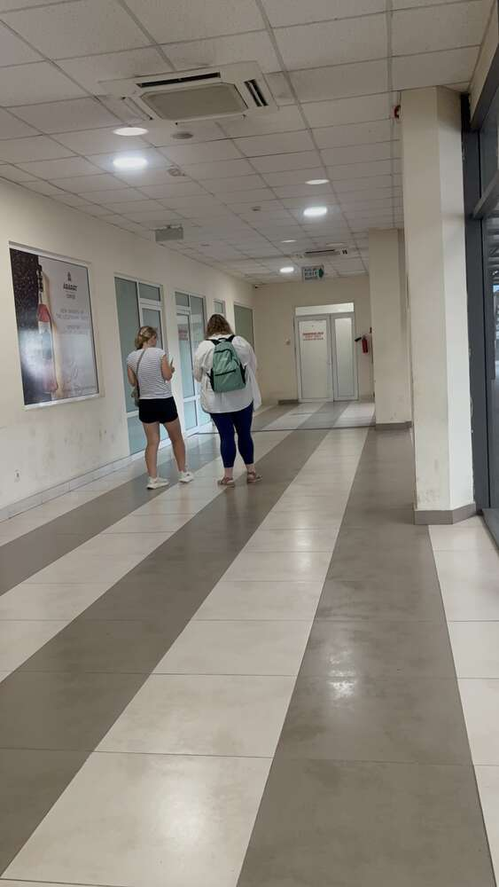
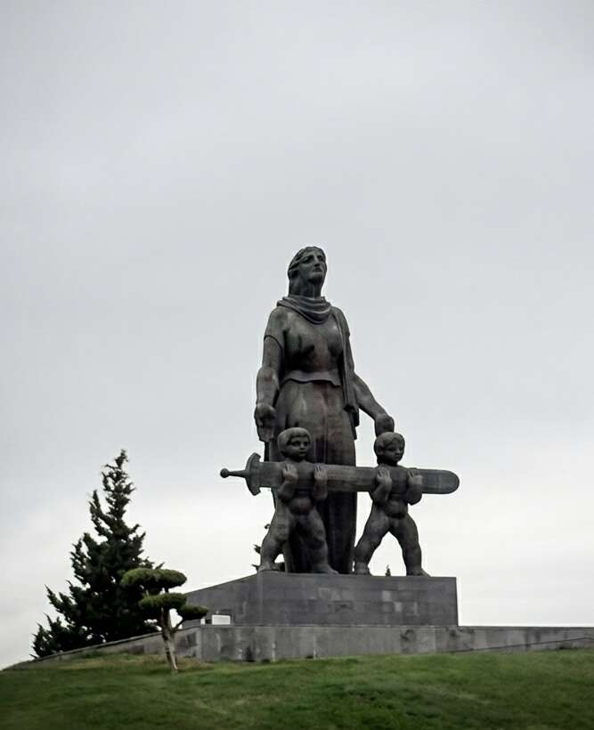
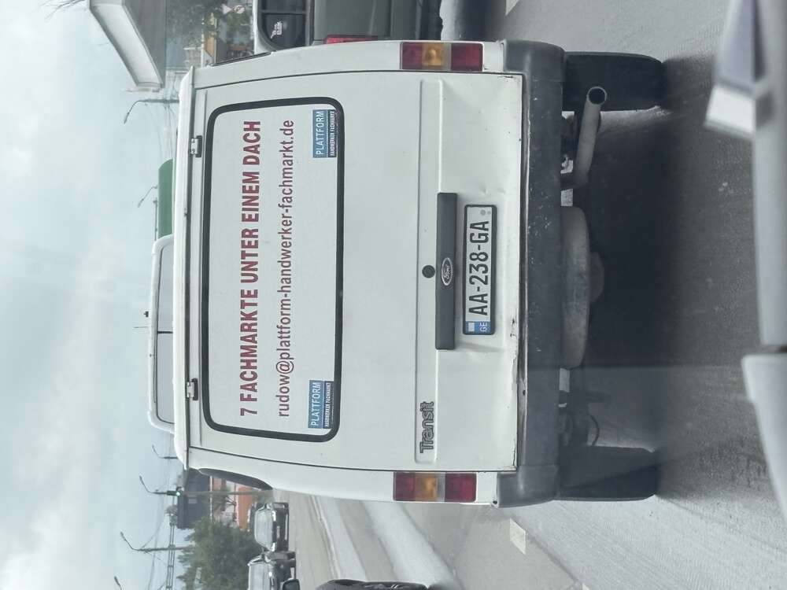
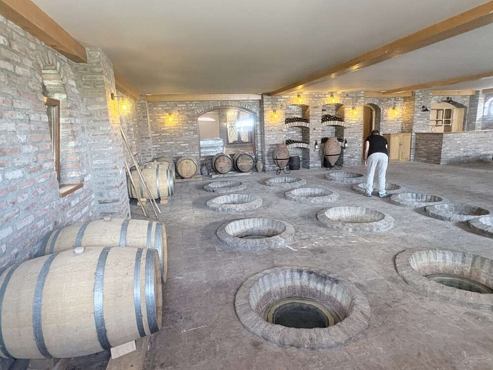
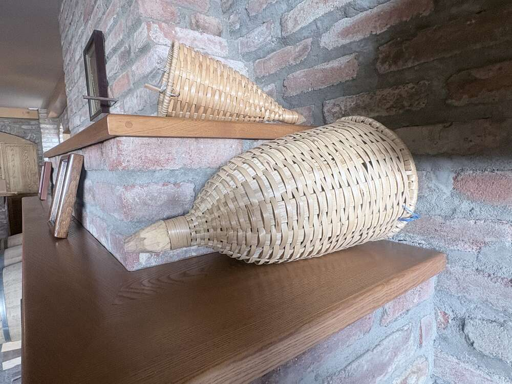
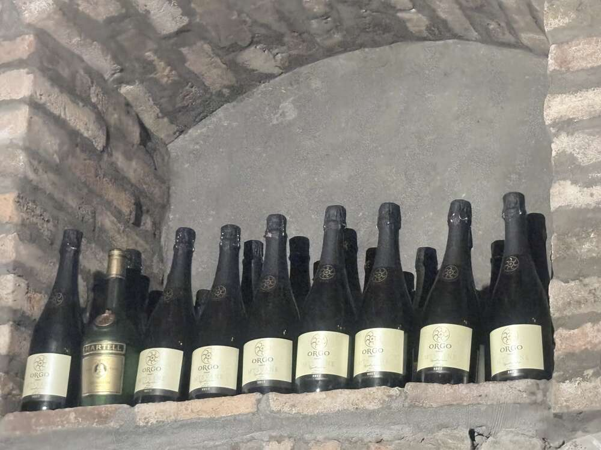

Offizielles Programm: Grenzübertritt von Armenien nach Georgien am Übergang Bagrataschen/Sadakhlo, Weiterfahrt Richtung Tiflis.
Georgien ist, gemeinsam mit Armenien, eine der ältesten christlichen Nationen der Welt – das Christentum wurde hier bereits 337 n. Chr. zur Staatsreligion, der Überlieferung nach durch die Missionarin Heilige Nino. Historisch bestand das Land aus zwei Königreichen: Kolchis im Westen (Schauplatz der griechischen Argonautensage um das Goldene Vlies) und Iberien im Osten, um Tiflis herum. Eine eigene, mit keiner anderen Schrift verwandte Alphabetschrift (Mchedruli) entstand bereits im 4./5. Jahrhundert – bis heute Ausdruck eines ausgeprägten kulturellen Eigensinns.
Die politische Blütezeit erlebte Georgien im 12./13. Jahrhundert unter Königin Tamar, als das Reich von Meer zu Meer reichte. Es folgten Jahrhunderte mongolischer, persischer und osmanischer Fremdherrschaft, 1801 die Annexion durch das Russische Zarenreich, kurze Unabhängigkeit 1918–1921, dann sowjetische Herrschaft bis 1991 – wobei ausgerechnet Georgien mit Josef Stalin (geboren in Gori) den prominentesten Sowjetdiktator hervorbrachte. Nach der Unabhängigkeit 1991 folgten Bürgerkrieg, die „Rosenrevolution“ 2003 und der Krieg gegen Russland 2008 um die abtrünnigen Gebiete Abchasien und Südossetien, die bis heute von russischen Truppen kontrolliert werden.
Aktueller Stand: Georgien erhielt Ende 2023 den EU-Beitrittskandidatenstatus – bei rund 80 Prozent Zustimmung in der Bevölkerung einer der höchsten Werte aller Beitrittsländer. Ende November 2024 erklärte die seit 2012 regierende Partei „Georgischer Traum“ (informell gesteuert vom Oligarchen Bidsina Iwanischwili) den Beitrittsprozess bis mindestens 2028 für ausgesetzt – seither kommt es zu anhaltenden pro-europäischen Protesten in Tiflis und anderen Städten. Die EU-Flaggen, die einem gleich hinter der Grenze begegnen, stehen damit in einem gewissen Spannungsverhältnis zur aktuellen Regierungslinie.
Grenzübergang Bagrataschen/Sadakhlo: Der meistgenutzte der drei für Ausländer passierbaren Grenzübergänge zwischen Armenien und Georgien, unweit des Debed-Flusses und nur wenige Kilometer von Haghpat entfernt. Die Grenzabfertigung selbst gilt als eine der entspanntesten im gesamten Kaukasus – keine Gepäckkontrolle, keine unnötigen Fragen, einfach ein Stempel in den Pass.

Der Wartebereich im Grenzgebäude – zweisprachige Beschilderung auf Armenisch und Russisch, dazwischen Werbung für armenischen Ararat-Kaffee. Ein architektonisch nüchterner Ort, der trotzdem als kleines Zeitfenster zwischen zwei Kulturräumen funktioniert.

Armenische Rekruten in Formation direkt am Grenzgelände – Armenien hat allgemeine Wehrpflicht (regulär zwei Jahre), und Grenzregionen wie diese sind entsprechend militärisch geprägt. Ein Bild, das die angespannte geopolitische Lage der gesamten Region unterstreicht, auch wenn dieser Grenzabschnitt selbst als ruhig gilt.
Ankunft in Georgien: Kaum die Grenze passiert, empfängt einen das erste georgische Ortsbild mit einem vertrauten Motiv: Springbrunnen mit Uhr, umgeben von wehenden Fahnen.

Georgische Staatsflaggen (das „Fünf-Kreuze-Wappen“, seit 2004 wieder offizielles Nationalsymbol) im Wechsel mit EU-Sternenflaggen – ein Bild, das angesichts der aktuellen politischen Lage fast wie eine stille Willensbekundung wirkt.

Ein typisches sowjetisches Kriegerdenkmal am Straßenrand: eine Mutterfigur, die zwei Kindern ein Schwert reicht – Ikonografie aus derselben Bildtradition wie die bekannteren „Mutter-Heimat“-Monumente in Wolgograd, Kiew oder Jerewan, hier in kleinerem Maßstab zum Gedenken an die Gefallenen des Zweiten Weltkriegs (des „Großen Vaterländischen Krieges“). Solche Denkmäler stehen bis heute in praktisch jedem größeren Ort im postsowjetischen Raum.
Kurioses am Wegesrand: Mitten im georgischen Verkehr taucht plötzlich ein alter Ford Transit mit Berliner Werbeaufschrift auf – „7 Fachmärkte unter einem Dach“, komplett mit deutscher E-Mail-Adresse.

Gebrauchte deutsche Nutzfahrzeuge werden seit Jahren in großer Zahl in den Kaukasus und nach Zentralasien exportiert – oft samt Originalbeschriftung, wie hier: ein Handwerker-Lieferwagen aus Berlin-Rudow, jetzt mit georgischem Kennzeichen unterwegs in der Provinz Kwemo Kartli. Ein kleiner, unfreiwilliger Gruß aus der Heimat.
Telawi: Hauptstadt der Weinregion Kachetien und historische Residenzstadt der kachetischen Könige, rund 70 km östlich von Tiflis im Alasani-Tal. Das Tal gilt als eigentliche „Wiege des Weinbaus“ – hier wurden die ältesten bislang bekannten Spuren der Weinherstellung überhaupt gefunden, mit einer durchgehenden Tradition von rund 8000 Jahren.

Das Reiterstandbild König Erekles II. (1720–1798) im Stadtzentrum – 8,5 Meter hohe Bronzestatue von 1971, eines der Wahrzeichen Telawis. Erekle II. war der letzte große georgische König, der Kachetien und Kartlien vereinte, gegen Perser und Osmanen kämpfte und sich 1783 im Vertrag von Georgijewsk unter russischen Schutz stellte – ein Schritt, der rückblickend den Weg zur späteren russischen Annexion ebnete. Bei der Bevölkerung war er wegen seines persönlichen Mutes so beliebt, dass er den Spitznamen „Patara Kachi“ („Kleiner Kachetier“) erhielt, in Anlehnung an Napoleons „Kleinen Korporal“.
Wein aus dem Qvevri: Die traditionelle georgische Weinherstellung in eiförmigen, bis zu 3000 Liter fassenden Tongefäßen (Qvevri) wurde 2013 von der UNESCO zum immateriellen Kulturerbe der Menschheit erklärt. Die Gefäße werden bis zum Hals im Boden vergraben – die Erde hält die Temperatur während der mehrwöchigen bis mehrmonatigen Gärung auf der Maische (Skin Contact) konstant kühl. Bei Weißweinen entsteht durch diesen langen Schalenkontakt die charakteristische bernstein- bis goldfarbene Tönung – daher der international gebräuchliche Begriff „Amber Wine“ für georgische Orange Wines.

Der Bodenraum eines Weinkellers mit eingelassenen Qvevri – die runden Öffnungen sind bis zum Rand im Boden versenkt, sodass nur die Halsstutzen sichtbar bleiben. Ein gut gebrannter Qvevri kann mehrere Jahrzehnte, manchmal Generationen überdauern.

Größere Tonkrüge im Verkostungsraum, dicht bedeckt mit Unterschriften und Grußbotschaften vergangener Besuchergruppen in Dutzenden Sprachen – ein informelles Gästebuch aus Ton.

Geflochtene Schutzhüllen aus Weidenruten um große Glasballons – eine traditionelle Methode, um Wein oder Tschatscha (georgischer Traubenschnaps) beim Transport vor Bruch zu schützen, ähnlich den italienischen Fiasco-Korbflaschen für Chianti.

Der Verkostungsraum selbst: lange Holztafel, umgeben von Ziegelnischen voller lagernder Flaschen – ein Bild, das die Ernsthaftigkeit hinter der georgischen Gastfreundschaft zeigt. Wein ist hier kein Beiwerk, sondern Kulturgut.

Verkostet wird unter anderem ORGO Mtsvane Brut – ein Schaumwein aus der autochthonen weißen Rebsorte Mtsvane, traditionell klassisch flaschenvergoren. Mtsvane (georgisch für „grün“) ist neben Rkatsiteli eine der wichtigsten weißen Rebsorten Kachetiens.

Geleerte Flaschen als kleines Regal-Denkmal des Abends – die Cognacflasche daneben verrät, dass es nicht bei der Weinprobe allein blieb.